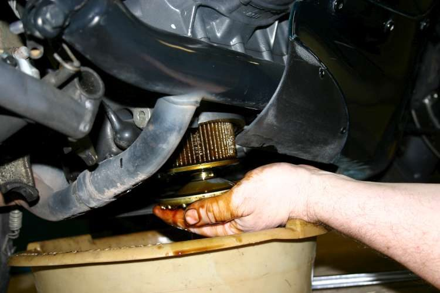
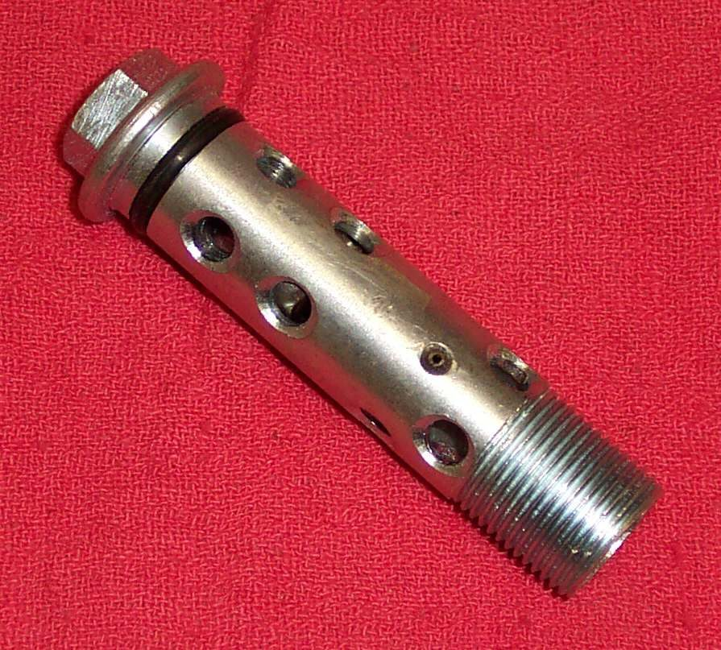
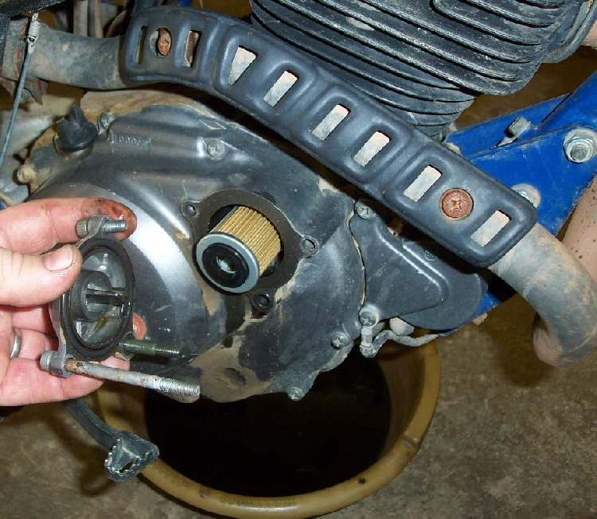
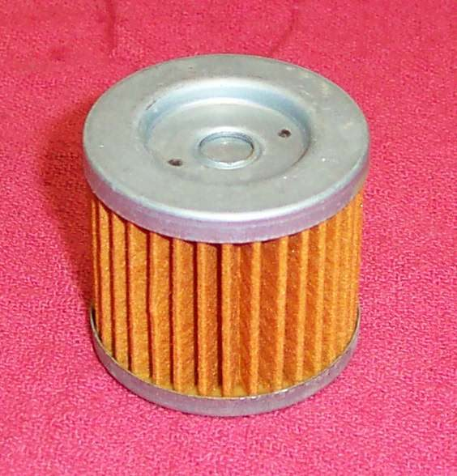

A filter holds a little old oil and traps dirt. Change it with the oil if the engine has one. This page covers the three common types: a spin-on can, a paper element in a cover, and a one-hole element in a side chamber. Do this together with Change the engine oil and clean the strainer.
Safety
- Hot oil burns. Let the engine cool a little, but drain it warm so the oil flows and carries dirt out.
- Support the bike upright and steady before you reach under it.
- A filter fitted the wrong way round can cut off the oil supply and wreck the engine in minutes. Check the manual if you are unsure.
You need
- The correct filter or element for your engine (check the part number in the manual or on the old one).
- A new O-ring or gasket for a cover type. Many elements come with one.
- A filter wrench that fits, or a strap wrench for a spin-on can.
- A torque wrench for cover bolts.
Steps
- Drain the oil first (see the engine oil service page).
- Spin-on can: wipe around the base. Unscrew the can with the wrench. A strap wrench can dent the can. A small dent is harmless on a can you are throwing away.
- Check that the old rubber ring came off with the can. A ring left stuck on the engine gives a leak.
- Wipe the engine seat clean. Wet the new rubber ring with a finger of fresh oil.
- Screw the new can on by hand until the ring just touches the seat. Then turn it the extra amount printed on the can or given in the manual (often about three quarters of a turn). Do not go beyond it. Over-tightening squashes the ring and causes a leak.
- Paper element in a cover: remove the cover bolts and the cover. Note how the element, spring and washers sit. The large thin washer (spring seat) must go back on the centre bolt. The centre bolt is hollow and carries oil, so keep it clean.
- Some elements have two holes and fit either way up. A one-hole element fits one way only. Match the old one and the manual. Fitted backwards, it blocks the oil.
- Fit a new O-ring or gasket, refit the cover and tighten the bolts with a torque wrench to the manual value. Cover bolts are often over-tightened.
- Refit the drain plug with a new washer, fill with oil to the manual amount, start the engine and let it idle for about a minute. Switch off.
- Wait a few minutes, then check the level and add oil. The level falls as the new filter fills. See Check the engine oil level.
Check your work
- No oil weeps from the filter, cover or drain plug after the engine has run.
- The oil warning light goes out soon after start.
- The level is between the marks after the engine has rested.
If it did not fix the problem
- Oil still leaks at the filter: Oil leaks from the oil filter or its cover.
- Noise or no oil pressure after the change: switch off and see Engine ticks, runs hot or seizes soon after an oil change.